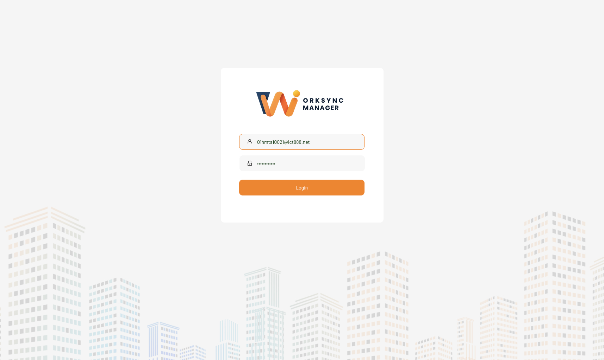
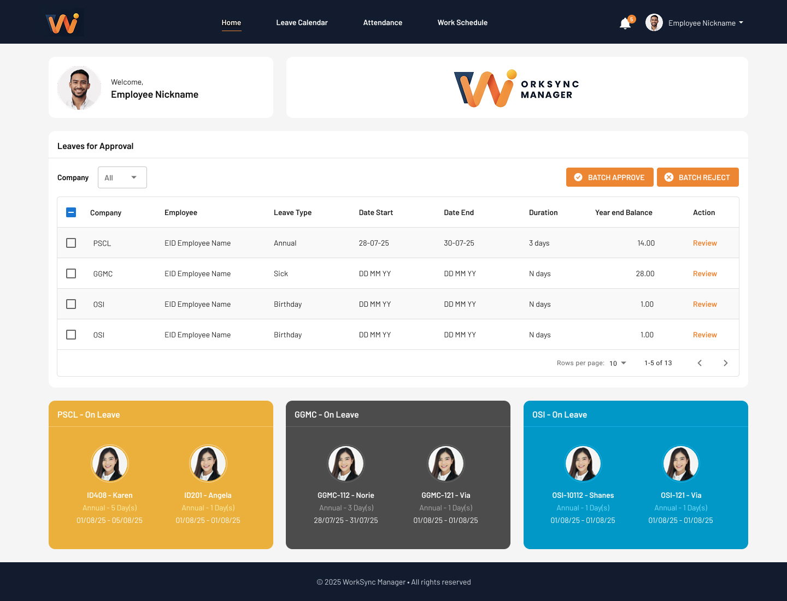

WorkSync Manager Work Schedule System
A workforce scheduling platform for shift management, timesheet tracking, and leave requests giving managers real-time visibility into employee schedules, work hours, and team availability across departments.
Workforce visibility without the chaos
Managers were tracking employee schedules, timesheets, and leave requests across disconnected systems and manual spreadsheets. There was no single view to see who was working, who was on leave, or what shifts needed coverage.
I designed WorkSync Manager to bring workforce management into one platform with real-time schedule views, timesheet tracking, and leave management all in a unified dashboard.

Login purple gradient background with the "WorkSync Manager" brand and clean credential form

Home employee profile with stats (scheduled hours, worked hours, leave requests), team schedule table, timesheet summary, leave request form, and shift management tools all in one view
What I designed
Home Dashboard
Employee hub with personal stats (scheduled hours, worked hours, leave requests), quick access to timesheet, schedule, and leave tools all in a clean sidebar navigation layout.
My Schedule
Personal schedule view with shift details, work hours, and upcoming assignments giving employees full visibility into their work calendar.
Timesheet Tracking
Work hours log with daily breakdown, total hours calculation, and status tracking enabling accurate payroll and attendance monitoring.
Leave Requests
Streamlined leave application form with date range selection, reason input, and manager approval workflow replacing paper-based leave systems.
Contact Directory
Employee contact list accessible within the platform connecting team members for shift swaps and schedule coordination.
Team Schedule View
Manager dashboard with full team schedule table showing all employees, their shifts, work status, and leave status for complete workforce visibility.
Scheduling clarity for managers and staff
WorkSync Manager replaced manual scheduling and leave tracking with a unified, self-service platform. Employees could view their schedules, log timesheets, and request leave in one place. Managers gained real-time visibility into team availability, reducing scheduling conflicts and coverage gaps.